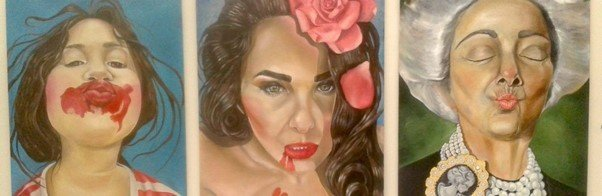
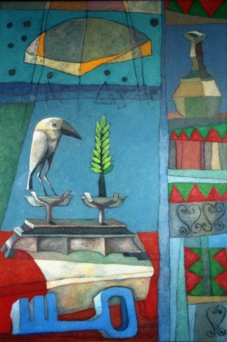
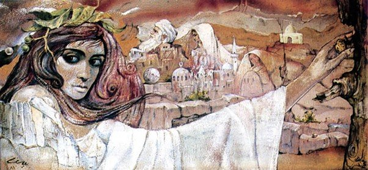
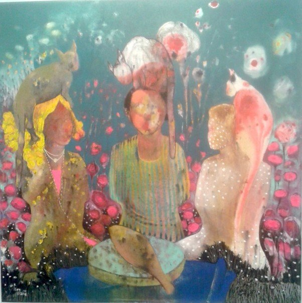
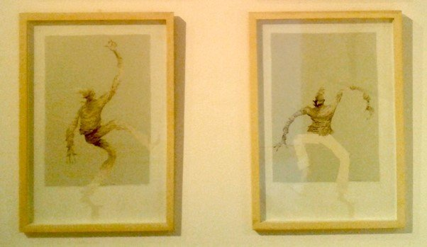
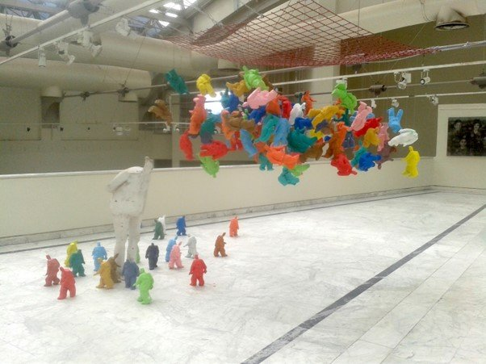
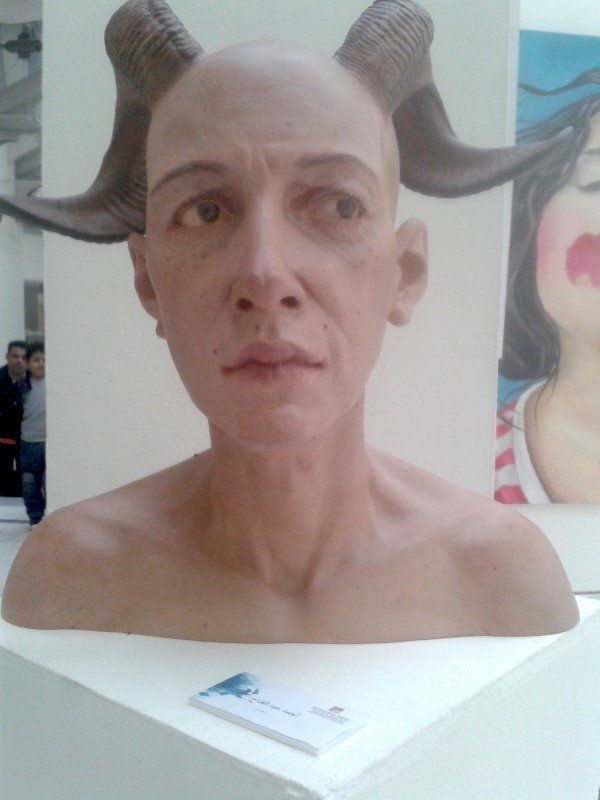

By Ismail Fayed

Exhibition view from the 57th Cairo Salon at Palace of the Arts
From the moment you step into the Palace of the Arts, where the 57th Cairo Salon is being held, you cannot escape the overwhelming existentialist bent of most of the works – or at least those that are interesting.
The salon was curated by the commissar for this year, artist Adel Tharwat (b. 1966), who is currently a professor of drawing and painting at Helwan University. Tharwat's artistic practice was reflected in his choices. His own style, a folkloric surrealism in the vein of late Abdel Hadi Gazzar, echoed in many of the works displayed. This created a sense of visual familiarity, if also a slight mental ennui from seeing an aesthetic that is tried and old.
This year's edition, which ran from February 21 to March 13 and is the second salon since the 56th in 2013, boasted around 70 artists (I counted 68), and in keeping with the usual tradition, there were no catalogues or a floor plan. Nor did any of the works have titles or dates. More disturbingly, less than a fifth of the artists were women (I counted around 10) — an astonishing fact for a medium pioneered by some of the leading women artists in the region and when many women artists are producing equally exciting work. A short drive across the Qasr al-Nil bridge in downtown Cairo, an all-female collective is staging interesting interventions in the city.

Adel Tharwat, from the series From the Margins, oil on canvas, 2004
In stark contrast to the General Exhibition of last year (while the two initiatives are similar, the difference is that the Salon is organized by the Association of the Friends of Fine Arts and the General Exhibition is organized by the Fine Arts Sector, although for decades now the former has fallen under the tutelage of the Fine Arts Sector), this salon had fewer of the usual suspects.
There were still works by some celebrity artists, such as Khaled Hafez's comic-like quasi-murals, Nathan Doss' menacing organic forms in two sculptures, and Ahmed Askalany's sculptures wrapped in palm weave. To the credit of its commissar, though, this year the Salon focused largely on a younger generation (in comparison for example with Gazbia Sirry, who showed work in last year's General Exhibition and is 91).
This was vividly reflected in the subjective choices of the artists, which leaned toward portraiture and self-portraiture. Nearly all of the works that were immediately visible or visually arresting were portraits revealing internal psychological states. They were executed with a variety of styles and techniques, from heavy expressionistic lines (a series by Sayyed Qandil, for example) to the saccharinely soft figuration of Asmaa al-Nawwawi and Fatma Abdel Rahman, painting in the style of Youssef Francis (1934-2001), whose work at Al-Ahram was widely imitated in the 1980s.

Youssef Francis, whose soft figuration style was widely imitated in the 1980s

Clay Qassim's contemporary surrealist work with humanoid figures and exploding heads
The spirit of surrealism is clearly evident in a series of paintings by Ahmed Saber: one with a giant mechanical fish, submerged under water with a hyper-real profile of a veiled woman looking at it, another with series of figures who have TV sets for heads — a tired, overfamiliar motif. Surrealism is also present in Adel Mostafa's large, roughly painted canvas of a cityscape with a sky raining fish and the more contemporary looking, brightly colored series by Clay Qassim of humanoid figures seated at a table with apparently exploding heads or cats seated on their shoulders.
In the realm of more expressionistic portraits, Hayam Abdel Baqi's painting of a couple kissing, and another in which they were placed next to each other, were warm in spite of their broad painterly abstraction. But the most outstanding expressionism-inspired oil painting had to be Sami Abu al-Azm's triptych of a seated woman, a coat hanger and a pair of trousers and coat laying over what looks like a door. The contrasting tones of the paintings, the textured surfaces, the suggestion of domesticity and interiority, and the preoccupied gaze of the seated subject all gave a sense of a deeply psychological moment. In contrast, Ahmed Abdel Fattah's portrait of a holy man in a state of contemplation was almost sensational in its scale and depiction. The imposing size of this portrait and the accompanying painting focused on details of his dress and hands was dramatic, perhaps even as hypnotic as an actual holy man.
Similar but less dramatic is Tarek al-Sheikh's series of drawings of an elongated clown in fragile and poignant poses, whose lightness and joviality betrays something more macabre and sinister.

Tarek al-Sheikh's elongated clown drawings revealing macabre undertones
There were also other styles of abstraction, the most memorable being Mahmoud Hamdy's series of brightly colored, organic cellular forms or organelles. It was unusual in its smoothness and freshness. Less interesting was Gihan Soliman's and Mohamed Banawy's stark geometric semi-abstraction of residential buildings and chairs, which felt empty and unconvinced.
The few women artists in the salon engaged with the subject of representing women, some in rather subtle ways, like Reeham Abdel Baqi, others in a more ostentatious, Pop-like style like Riham al-Saadani's series (top). Saadani's portrait triptych of three women at different stages of their lives seemed like it might be an attempt at a feminist statement. Yet the mix of photorealism and clear compositional mistakes (such as symmetrical alignment of facial features, distorted perspective and patchy tonal harmony) put into question such ambition. The three women look primarily bourgeois, with the oldest wearing an antique brooch and a string of pearls.
The salon did veer away from the trend of recycling the works of Egyptian modernists, yet it also fell victim to the usual insistence on painting as the true and proper medium of fine art. The overwhelming majority of displayed works were oil or acrylic on canvas. There were only about five installations in a total of six galleries and these mostly used sculpture extensively, such as Ayman al-Sami's bizarre team of wooden horses laminated in plastic with Arabic calligraphy printed all over them. Kamal al-Fiqy's sculptural installation stood out. Its kitschy, colored mini-sculptures of distorted human figures, led by a larger towering figure, were fun yet suggest the sinister side of the trappings of power and control.

Kamal al-Fiqy's kitschy sculptural installation suggesting power dynamics

Ahmed Abdel Fattah's hyper-realistic human bust with ram horns
The presence of sculpture in most of these installations felt like an attempt to validate the notion of installation art. There was also a remarkable absence of video and photography, a deliberate omission that is inexplicable in the light of an ever-increasing consumption of images, both virtual and physical, in Egyptian society. Sculpture fared a bit better, but left a lot to be desired.
Meanwhile, the majority of the works once again failed to escape the neo-pharaonic dogma. Mohamed Radwan's statue awkwardly tried to abstract traditional statutes from the Fifth Dynasty, while Mohamed Ishaq's seated family with two attendants or guardians represents only a slight modification from its original pharaonic source. Perhaps one of the few more interesting exceptions in this genre was Ahmed Abdel Fattah's hyper-realistic human bust with horns of a ram, perhaps in reference to Satan.
The existentialist tendency of many of the works presented and the fascination with representation and identity was a welcome move away from the more propagandistic works presented in last year's General Exhibition and the recycling of celebrated Egyptian modernists that we see in every show. Tharwat should be commended for opening the Palace of the Arts to a more subjective palette and artistic preoccupations that are not specifically rooted in mid-century Egyptian aesthetics. The legacy of neo-pharaonism and contrived abstraction were still present, and the absence of photography and video was problematic, but at the very least other ideas and forms were recognized and given the space they very much deserve.